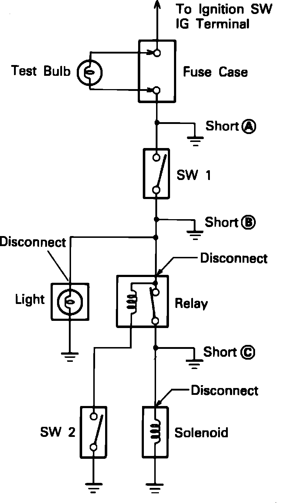

Finding Short Circuits
Meter Types:

1. Use a digital or analog multimeter with a minimum 10k ohm resistance.
2. Remove the blown fuse and disconnect all loads for that circuit.
Finding A Short Circuit:

3. Connect a test lamp in place of the fuse.
4. Establish conditions that turn the test lamp on.
EXAMPLE
a) Ignition SW ON
b) Ignition SW ON and SW 1 ON
c) Ignition SW, SW 1 and Relay ON (connect the relay)
5. Connect and disconnect the components or connectors in the circuit while watching the test light.
a) The test light will come on when the shorted circuit or component is connected.
b) The test light will go off when the circuit or component is disconnected